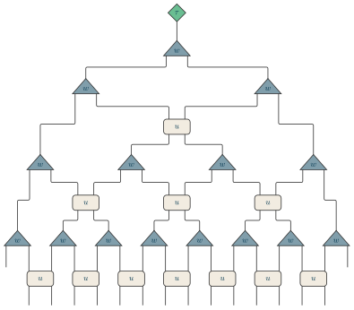

Examples / 20
MERA

A binary MERA on sixteen sites, all the way up: four tiers of coarse-graining – sixteen sites, eight, four, two, one – and the top tensor that closes it.
Read upward. In each of the first three tiers the disentanglers u act first, on pairs that straddle the blocks the isometries are about to join, and remove the entanglement across those block boundaries; then each isometry w takes a block of two sites to one. The fourth tier has two sites left and only joins them: a disentangler there would act on the same pair the isometry does, and has nothing to straddle. The top tensor is the state on the one site that remains – the one tensor of the network that is neither an isometry nor a unitary, so it is the center.
Every index here is placed by one rule: two tensors of different extent meet once, in the middle of the sites they share. So a disentangler meets the isometries under it at their apexes, an isometry meets the disentangler it overlaps by half in the middle of that half, and the top tensor, two sites wide in the middle of the network, meets the last isometry at its apex. The layers are ‘apart’: nothing joins two tensors side by side, and the stack is drawn as a tree ([tree]), every tensor its own size and every index that does not line up turning a corner on its way.
The layout – tiers of isometries and disentanglers, the disentanglers flat boxes between the triangles, each index turning a corner on its way up – is modelled on the MERA in the figures on the front page of tensornetwork.org. The drawing is this package's own; the arrangement is theirs.
The picture
Point at a line to see what it draws, or at the picture to see which line drew it.
\begin{tikzpicture} \tnstack[tree]{M}{16}{top, w4, w3, u3, w2, u2, w1, u1} \tnlayer{M}{top}{7*., center/$\tau$/2, 7*.} \tnlayer{M}{w4}{iso/$w$/16} \tnlayer{M}{w3}{2*iso/$w$/8} \tnlayer{M}{u3}{4*., disentangler/$u$/8, 4*.} \tnlayer{M}{w2}{4*iso/$w$/4} \tnlayer{M}{u2}{2*., 3*disentangler/$u$/4, 2*.} \tnlayer{M}{w1}{8*iso/$w$/2} \tnlayer{M}{u1}{., 7*disentangler/$u$/2, .} \tnconnect[apart={top, w4, w3, u3, w2, u2, w1, u1}]{M} \tnopen{down}{M}\end{tikzpicture}
The whole file
\documentclass[border=4pt]{standalone}\usepackage{amsmath,amssymb}\usepackage{tikz-tensors}\input{notation}\begin{document}\begin{tikzpicture} \tnstack[tree]{M}{16}{top, w4, w3, u3, w2, u2, w1, u1} \tnlayer{M}{top}{7*., center/$\tau$/2, 7*.} \tnlayer{M}{w4}{iso/$w$/16} \tnlayer{M}{w3}{2*iso/$w$/8} \tnlayer{M}{u3}{4*., disentangler/$u$/8, 4*.} \tnlayer{M}{w2}{4*iso/$w$/4} \tnlayer{M}{u2}{2*., 3*disentangler/$u$/4, 2*.} \tnlayer{M}{w1}{8*iso/$w$/2} \tnlayer{M}{u1}{., 7*disentangler/$u$/2, .} \tnconnect[apart={top, w4, w3, u3, w2, u2, w1, u1}]{M} \tnopen{down}{M}\end{tikzpicture}\end{document}